library(tidyverse) # Data wrangling and plotting
library(readxl) # Importing excel data
library(ggrepel) # Overlapping labels
library(cowplot) # Inserting chemical structure
library(magick) # Importing images in tiff formatMaking publication-ready MS/MS mirror plots
A step-by-step tutorial for creating MS/MS mirror plots in R
LC-MS
This post shows how to create beatiful mirror plots to compare experimental vs reference MS/MS fragementation pattern with a slight focus on metabolomics.
Goal of this document
This post is a step-by-step tutorial about how to create publication-ready mirror plots to show the similarities, or differences between an experimental and reference MS/MS spectra.
This post will assume you have two MS/MS spectra you’d like to compare. This will most often be an experimental spectrum you’ve collected, and a reference spectrum from a standard or database. By the end of this post, you will be familiar with data visualization techniques needed to create and customize MS/MS mirror plots. Some examples of final plots are below:
Experimental vs. Analytical standard spectrum
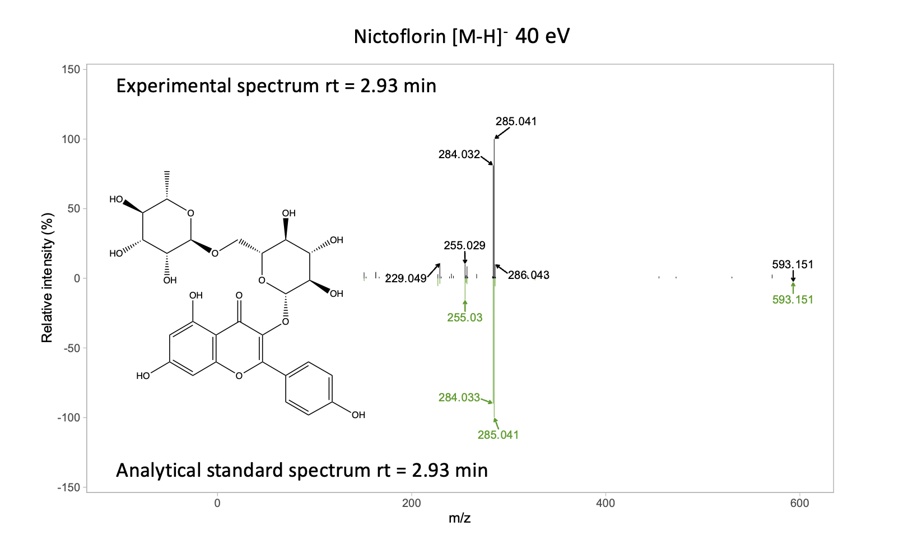
Experimental vs. literature spectrum
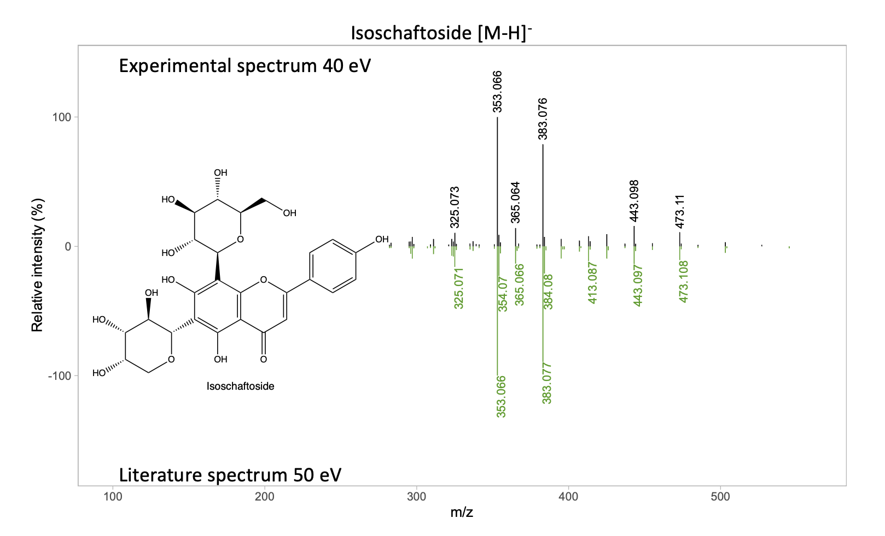
Disclaimer
This post will not cover metabolite identification approaches.
There is a lot of material about approaches for metabolite identification , and we encourage to visit these references if you are not familiar with this topic.
Here is the list of few places that you can visit to get familiar with metabolite ID.
Introduction
Metabolite identification from untargeted mass spectrometry based metabolomics data can be conducted by using different platforms and approaches. The gold standard is comparing the m/z and retention time of a peak in your sample to that of an authentic standard. However, given that often this type of matching is impossible or impractical, another commonly usedapproach is comparing the MS/MS fragmentation pattern of your experimental data against a reference spectrum. This reference spectrum could come from difference sources. In the best case scenario, you would have a reference material (analytical standard), and you will be able to collect MS/MS data of this material. Another option is using public or licensed MS/MS libraries.
Although the concept of comparing the fragmentation patterns of the experimental spectrum against a reference spectra sounds fairly easy, this task is not trivial, as mathematical methods to quantify the similarity between two vectors or matrices are needed. There is a great read for in this topic that you can direct your attention if you are interested in this topic Niek F. de Jonge et al. 2022.
Once you have successfully processed your MS/MS data and have found or collected an MS/MS spectrum that you think matches your compound, you can make a figure that compares those spectra together so others can evaluate their similarity. The first step though is to gather your MS/MS data.
Gathering MS/MS data
This section aims to briefly explain how to extract MS/MS data from your raw files to create a table of m/z values and ion intensities to create the mirror plot. If you already have these data, you can jump to the next section.
Here, I will explain how we extracted the tables containing m/z values and ion intensities for making the mirror plots. If you want to replicate these plots, you can download these tables.
Experimental
The experimental MS/MS spectrum comes from you data. Either form the raw MS/MS files, or from the deconvoluted MS/MS peaks.
Here is an example how we used MZmine3 to extract the m/z and ion intensity table from the nictoflorin standard. If you want to download the raw nictolorin .mzml file, you can find it in the PhenolicsDB at this link
Once you load your data in MZmine3, you need to select the MS/MS scan that has the desired MS/MS data. Then, in the MS/MS plot panel, you can right-click and export this spectrum to an excel file that we are going to use later.
You can use the same process to extract the data from your experimental files.
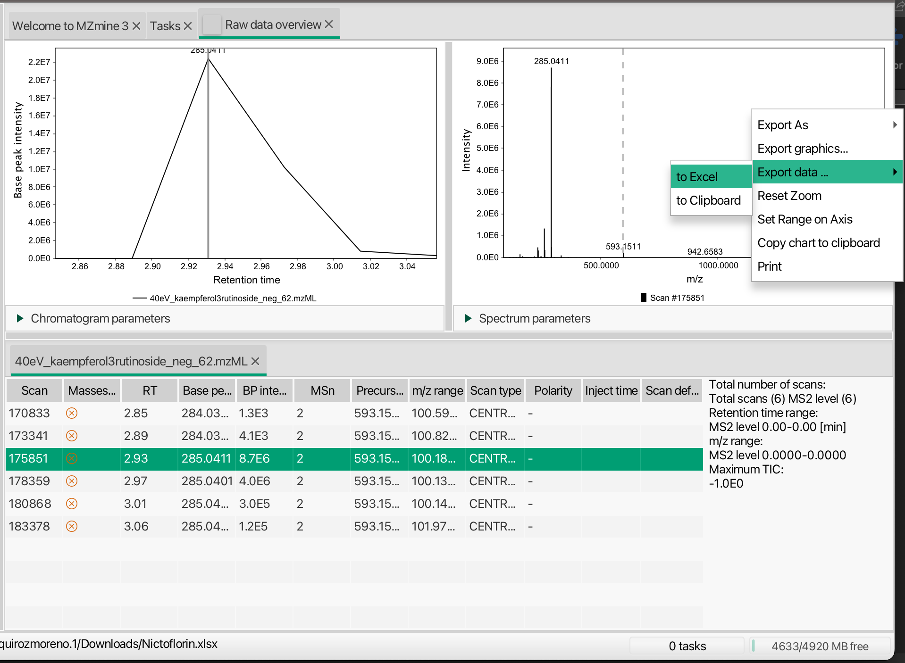
Literature spectra
You need to find the repository or have access to the MS/MS ion peak list of the literature spectrum. In this case, our literature spectrum matches to isoschaftoside from MassBank, with the accession number MSBNK-Fiocruz-FIO00727.
Here, you can simply copy the m/z and intensity values to an excel file, or any file as long as you have these to pieces of information.
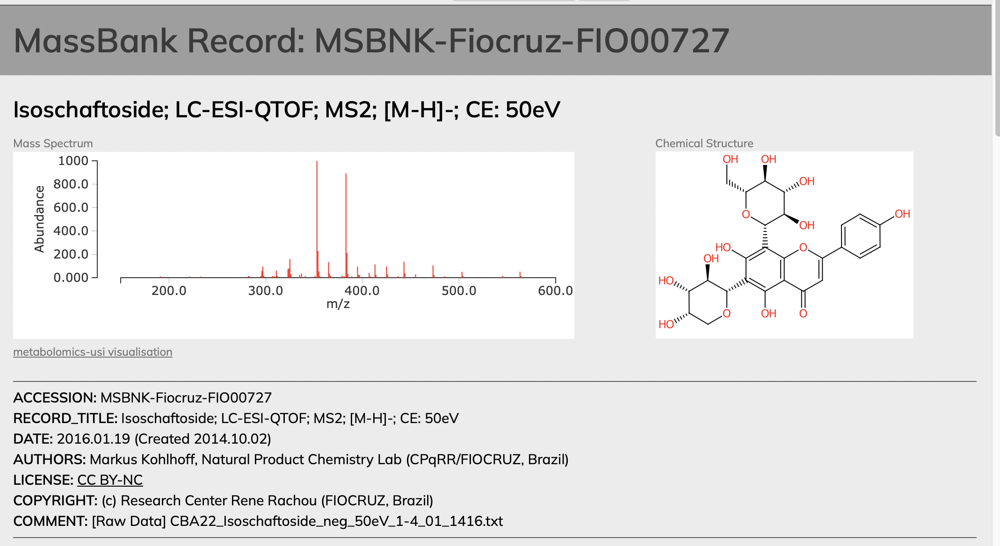
Data Wrangling
Loading libraries
Here, we are going to list and load all R libraries needed to create the mirror plots.
Importing MS/MS data
As we mentioned earlier, we are going to work with two examples, the mirror plot for isoschaftoside and in a next post we will cover the example of the nictoflorin mirror plot. While the mirror plot of isoschaftoside reflects example of a match to a literature spectrum, the nictoflorin mirror plot is an example of a math to an analytical standard spectrum.
We are going to show how to create the mirror plot of isoschaftoside first, as it does not have ions with super close m/z values that we need to label, which requires extra work.
Both provided excel files has three columns:
- mz: m/z values
- intensity: ion signal intensity
- Group: refers if the signal is from the experimental or reference spectrum
# Isoschaftoside data
isoschaftoside_data <- readxl::read_excel("data/Isoschaftoside.xlsx", sheet = 1)
glimpse(isoschaftoside_data[seq(3), ])
#> Rows: 3
#> Columns: 3
#> $ mz <chr> " 191.034100 ", " 221.045900 ", " 233.045100 "
#> $ intensity <chr> "326.000000 ", "277.000000 ", "252.000000 "
#> $ Group <chr> "Standard", "Standard", "Standard"We can note that the mz columns was imported as character and not as number. It is because there are empty characters that prevents R to import this colum as character. The solution is to use the parse_number() function.
isoschaftoside_data <- isoschaftoside_data %>%
mutate(intensity = parse_number(intensity), # Correcting numeric values
mz = parse_number(mz))
glimpse(isoschaftoside_data)
#> Rows: 660
#> Columns: 3
#> $ mz <dbl> 191.0341, 221.0459, 233.0451, 282.0529, 283.0603, 295.0601, …
#> $ intensity <dbl> 326, 277, 252, 324, 305, 368, 1454, 2380, 389, 397, 308, 150…
#> $ Group <chr> "Standard", "Standard", "Standard", "Standard", "Standard", …We can see the mz and intensity column are properly format as dbl, or a numeric variable. Now, we are going to create two groups in this dataset, as we have the ions from the experimental and reference spectrum.
isoschaftoside_data <- isoschaftoside_data %>%
group_by(Group) # Grouping by standard and sample
glimpse(isoschaftoside_data)
#> Rows: 660
#> Columns: 3
#> Groups: Group [2]
#> $ mz <dbl> 191.0341, 221.0459, 233.0451, 282.0529, 283.0603, 295.0601, …
#> $ intensity <dbl> 326, 277, 252, 324, 305, 368, 1454, 2380, 389, 397, 308, 150…
#> $ Group <chr> "Standard", "Standard", "Standard", "Standard", "Standard", …At the top of the output we can see that two groups were created, the standard and sample group.
Relative abundance calculation
Since the ion abundance of both spectra are in ion counts (i.e., raw abundance), and the scale of the experimental and standard data are different, we need to calculate the relative abundance, that can be calculated by dividing each intensity by the max intensity, times 100. This will allow us to compare spectra that have different raw intensities.
We can implement this using the code below:
isoschaftoside_data <- isoschaftoside_data %>%
mutate(Rel_int = intensity/max(intensity)*100) # Relative abundance calc
# Printing ion abundance greater than 50%
isoschaftoside_data %>% filter(Rel_int > 50)
#> # A tibble: 4 × 4
#> # Groups: Group [2]
#> mz intensity Group Rel_int
#> <dbl> <dbl> <chr> <dbl>
#> 1 353. 25145 Standard 100
#> 2 383. 22453 Standard 89.3
#> 3 353. 19000 Sample 100
#> 4 383. 15000 Sample 78.9For example, this table shows the ions that has a greater relative abundance than 50%.
We can also print how many ions are found in both the sample and the standard.
isoschaftoside_data %>% count() # Counting number ions per group
#> # A tibble: 2 × 2
#> # Groups: Group [2]
#> Group n
#> <chr> <int>
#> 1 Sample 605
#> 2 Standard 55Until this point, the sample (experimental) and the standard peak list have 605 and 55 ions, respectively. The larger number of ions in sample is attributed to the fact that this spectra was not processed to remove low intensity signals.
Filtering low abundance ions
We can process our data to remove ions with low abundance. In our case, we are going to remove signals below 1.2% intensity, and ions less than 280 m/z. The first criterion aims to remove low signal ions that are the product of background noise. We are also removing ions less than 280 m/z as reference spectra do not show any signal below this m/z value.
Note from authors: With programming you can handle/manipulate your data in an unlimited ways, so please be honest and report precisely how you process your data.
isoschaftoside_data <- isoschaftoside_data %>%
filter(Rel_int > 1.2) %>% # Removing signal less than 1.2% intensity
filter(mz > 280) # Removing ions below 280 m/z
isoschaftoside_data %>% count()
#> # A tibble: 2 × 2
#> # Groups: Group [2]
#> Group n
#> <chr> <int>
#> 1 Sample 42
#> 2 Standard 50With the final spectra processing approach, we had a final number of ions of 42 and 50 ions for the sample and standard spectra, respectively.
Negative intensities for the reference spectrum
If we recall the peak table, both, the experimental and the reference spectra have positive values. The core concept of mirror plot is that the reference spectra has negative intensity values, which will be plotted as the mirror plot of the experimental spectrum.
isoschaftoside_data %>% filter(Rel_int > 50)
#> # A tibble: 4 × 4
#> # Groups: Group [2]
#> mz intensity Group Rel_int
#> <dbl> <dbl> <chr> <dbl>
#> 1 353. 25145 Standard 100
#> 2 383. 22453 Standard 89.3
#> 3 353. 19000 Sample 100
#> 4 383. 15000 Sample 78.9Therefore, we need to make the intensity values of the reference spectrum to be negative.
# Changing standard intensity values to negative
# We eval the match of signals to belong to the standard groups, and
# multiply the intensity value time -1
isoschaftoside_data <- isoschaftoside_data %>% ungroup %>%
mutate(Rel_int = ifelse(Group %in% "Standard",
Rel_int*-1, Rel_int))
isoschaftoside_data %>% filter(Rel_int > 50 | Rel_int < -50)
#> # A tibble: 4 × 4
#> mz intensity Group Rel_int
#> <dbl> <dbl> <chr> <dbl>
#> 1 353. 25145 Standard -100
#> 2 383. 22453 Standard -89.3
#> 3 353. 19000 Sample 100
#> 4 383. 15000 Sample 78.9Now, we can see that the intensity values from the standard are negative while the sample remain positive.
At this point, we finally have the data ready for plotting.
Plotting a mirror plot
Backbone plot
The backbone of a mirror plot is a barchart. Therefore, we are going to use this geometry for this purpose geom_col().
isos_mirror <- isoschaftoside_data %>%
ggplot(aes(mz, Rel_int, fill = Group)) +
geom_col(width = 0.6)
isos_mirror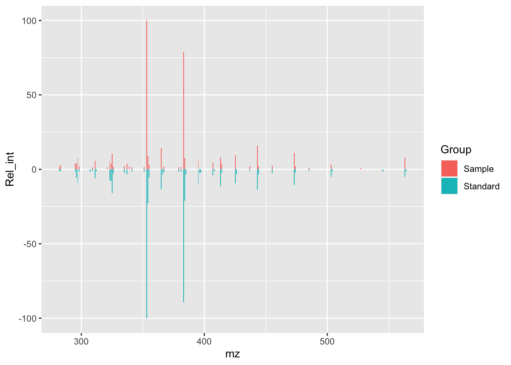
This is the backbone of our plot, now we are going to work to make it look nicer.
Changing group colors
Based on the GNPS mirror plot colors, we are going to change to a black color for the experimental MS/MS, while the reference spectra will be green.
isos_mirror <- isos_mirror +
scale_fill_manual(values = c(Sample = "#000000", Standard = "#4B9C15"))
isos_mirror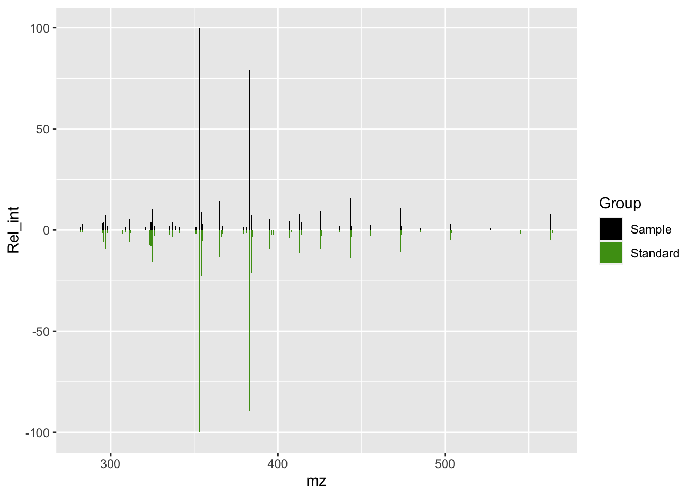
Background color and grids
The gray background is the default color in ggplot, but we can change this color to white, remove the grids, and remove the repetitive legend.
isos_mirror <- isos_mirror +
theme_light() + # Using a white background theme
theme(legend.position = "none", # Removing legend
panel.grid.major = element_blank(), # Removing grins
panel.grid.minor = element_blank())
isos_mirror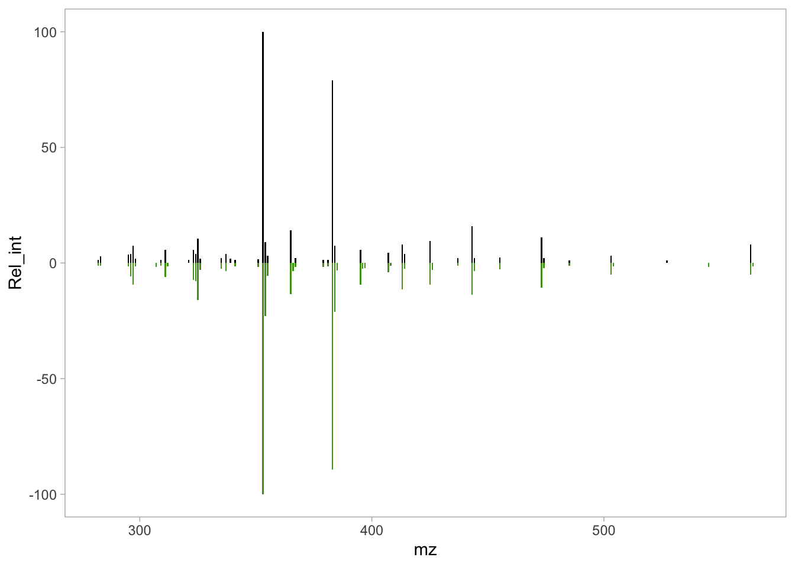
We have a cleaner plot, but the axis labels need to be altered, and a title added.
Changing labels
isos_mirror <- isos_mirror +
labs(x = "m/z", # X axis label
y = "Relative intensity (%)", # Y axis label
title = "Isoschaftoside [M-H]-")# Title label
isos_mirror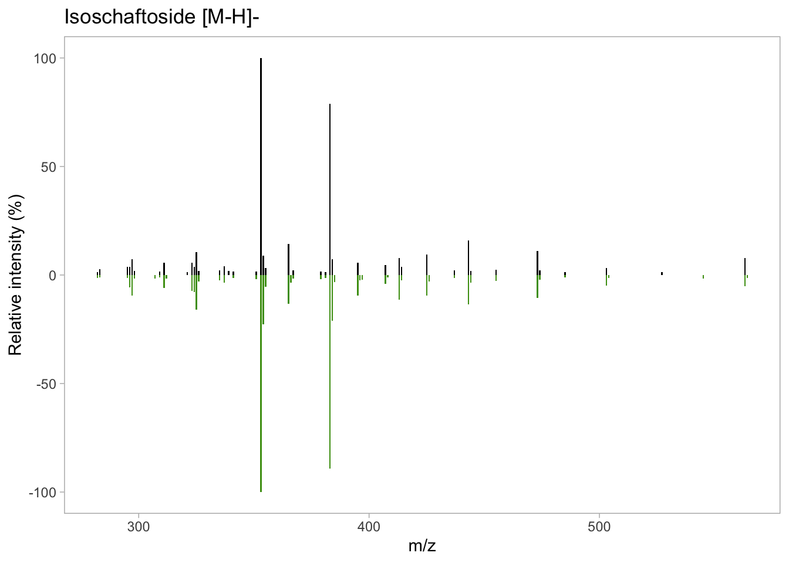
Axis limits
The mirror plot is looking more like to the mirror plot we showed at the top of this post. Next, lets set the x and y axis limits to make room for the additional labels.
# Text annotation coordinates
annotation_text <- data.frame(
x = c(170, 160),
y = c(140, -140),
label = c("Experimental spectrum 40 eV",
"Literature spectrum 50 eV"),
Group = c("Sample", "Standard")
)
isos_mirror <- isos_mirror +
ylim(c(-140, 140)) + # Y axis limit
xlim(c(100, 560)) + # X axis limit
geom_text(data = annotation_text,
aes(x = x, y = y, label = label))
isos_mirror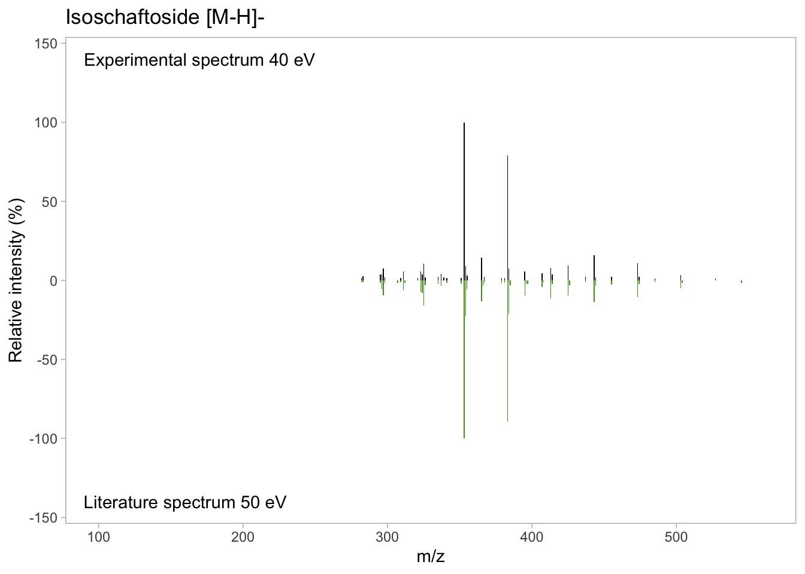
Adding labels
Next, we can proceed to add the labels for the m/z for the most intense ions. Here, you can take multiple approaches as what ions you want to label. For example, in the case of the isoschaftoside mirror plot, we are going to use only the ions with a relative abundance greater than 10%. On the other hand, in the case of nictoflorin, we are going to use the same 10% cutoff, and we are going to add the precursor ion.e the same 10% cutoff, but we are going to add the precursor ion.
Experimental spectrum lables
# Filtering ions in experimental spectrum
isos_labs_pos <- isoschaftoside_data %>%
filter( Rel_int > 10 )
isos_mirror <- isos_mirror +
geom_text(data = isos_labs_pos,
aes(label = abs(round(mz,3)), # Round label to 3 decimal digits
y = Rel_int),
size = 3, # Label size
angle = 90, # Rotate label 90 degree
hjust = -0.1) # Place after the max intensity
isos_mirror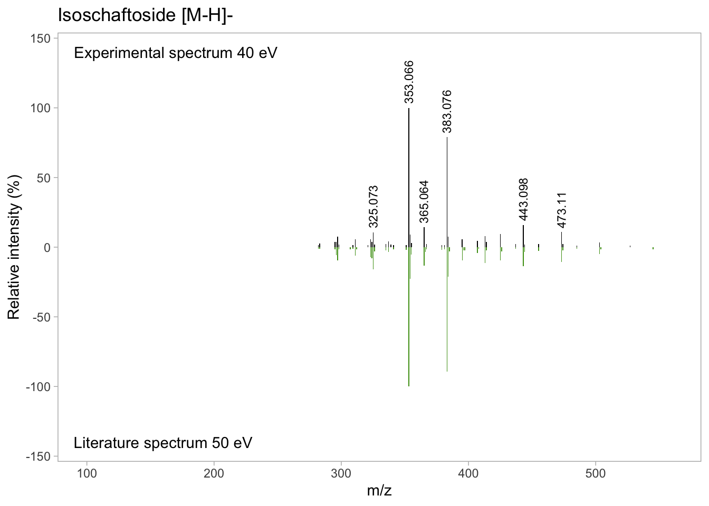
Reference spectra lables
Finally, we need to add the labels in the reference spectrum.
# Filtering ions in the reference spectrum
isos_labs_neg <- isoschaftoside_data %>%
filter( Rel_int < -10 )
isos_mirror <- isos_mirror +
geom_text(data = isos_labs_neg, aes(label = abs(round(mz,3)),
y = Rel_int),
size = 3, angle = 90, hjust = 1, vjust = 1, color = "#4B9C15")
isos_mirror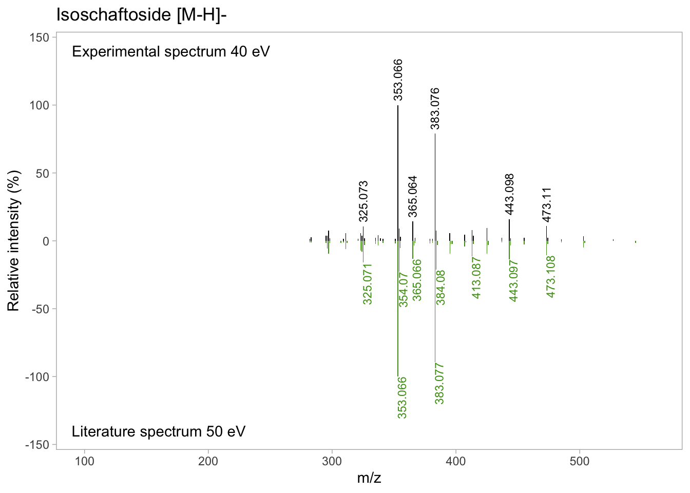
At this point, you almost have a final mirror plot. The final (optional) step is to add the chemical structure of the metabolite.
Inserting the chemical structure
You have couple of options for this task. By far, the easiest is to create or get the chemical structure of the metabolite in a different software (e.g., ChemDraw) and use an image processing software to join the mirror plot and the chemical structure in a final figure.
There are some online options to create/draw your chemical structure such as MolView, PubChem Sketcher, and Chemical Sketch. We used ChemDraw for its flexibility in the structure manipulation and because our University has an institutional subscription (so its free for us), but overall, for the option to export the chemical structure as .pdf or .svg that we can use with more flexibility later in the process of image processing.
For this example, we are providing the .tiff chemical structure that we exported using chemdraw:
First, we need to import image, and then we add the image on top of the mirror plot.
isos_structure <- image_read("img/Isoschaftoside_structure.tiff")
# Use cowplot funcition and use isos_mirror as base plot
isos_mirror_final <- ggdraw(isos_mirror) +
draw_image(isos_structure,
x = -0.2, # Relative x position
y = 0, # Relative y position
scale = 0.4) # Scaling to fit in the mirror plot
isos_mirror_final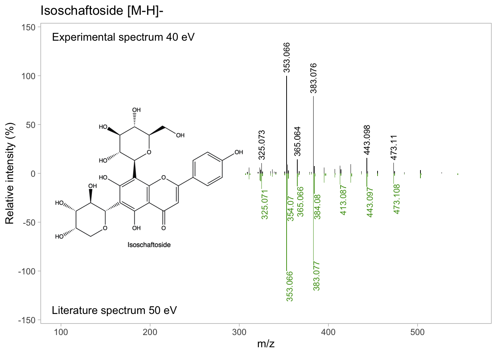
Finally, you can export your publication-ready mirror plot having control over the image size, and resolution with ggsave(). You can set parameters based on your needs, but here it is an example of what we used here.
# svg format
ggsave(plot = isos_mirror_final, filename = "nictoflorin_mirror.svg",
dpi = 300) # Resolution
# pdf format
ggsave(plot = isos_mirror_final, filename = "nictoflorin_mirror.pdf",
dpi = 300, # resolution
width = 4, height = 2, units = "cm", # image size
scale = 5) # image scaleIf you reached this point of the document, you reached the end of this tutorial. Please, let us know if this tutorial was useful and your feedback by clicking the email icon at the button of this page.